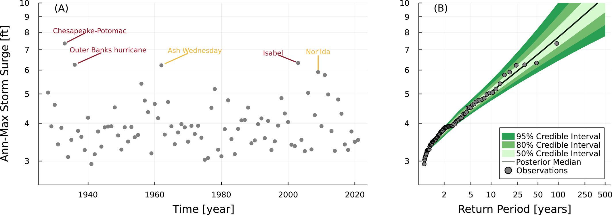
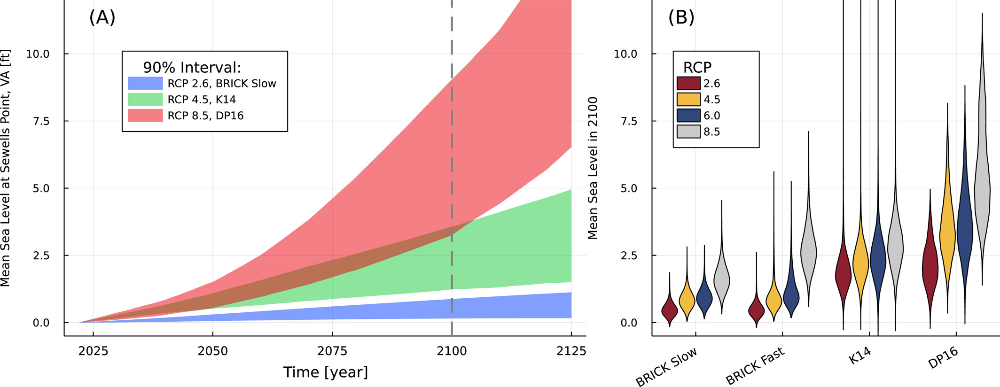
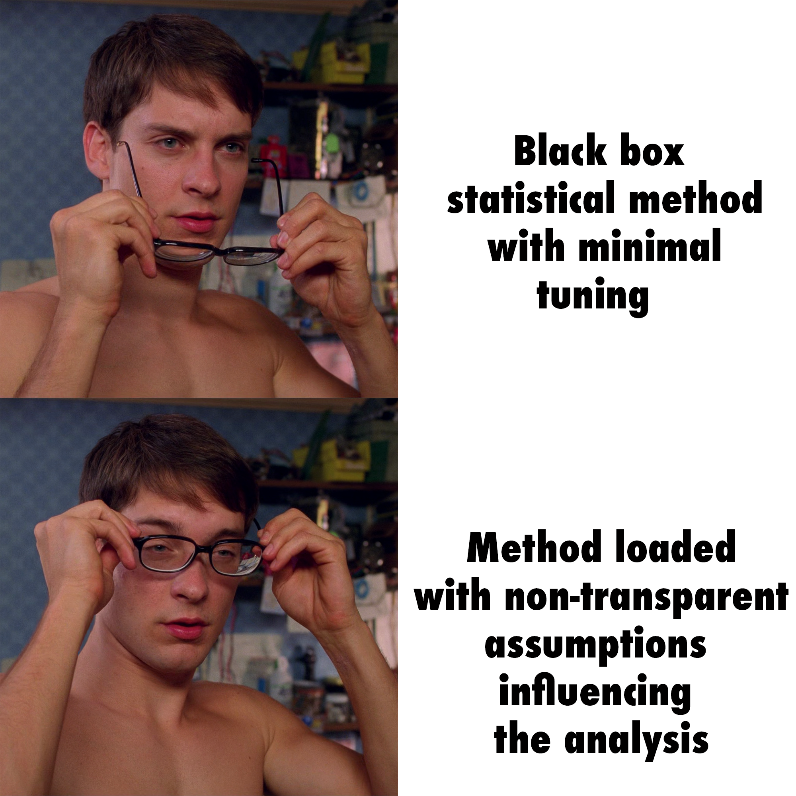
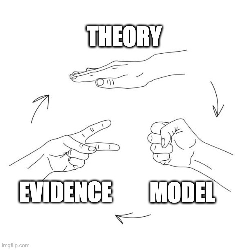

timeline
Introduction (Weeks 1-2): Overview
: Modeling Data-Generating Processes
: Hypothesis Testing and Scientific Inference
Probability Fundamentals (Weeks 3-5): Prob/Stats "Review"
: Model Fitting
: Bayesian Statistics
Simulation Methods (Weeks 6-7): Monte Carlo
: Bootstrap
Model Evaluation (Weeks 8-9): Cross-Validation
: Model Selection
Useful Models (Weeks 10-13): Extreme Values
: Missing Data
: Mixture Models
: Gaussian Processes
Experimental Design (Weeks 14): Confounds
: Controls and Designing Experiments
Welcome to BEE 4850/5850!
Lecture 01
January 22, 2024
Course Overview
About Me
Instructor: Prof. Vivek Srikrishnan,
Interests:
- Bridging Earth science, data science, and decision science to improve climate risk management;
- Unintended consequences which result from neglecting uncertainty or system dynamics.
Meet My Supervisors

What Do You Hope To Get Out Of This Course?
Take a moment, write it down, and we’ll share!
Course Motivation
Why Does Data Analysis Matter?
- Scientific insight;
- Decision-making;
- Understanding uncertainty
The Ideal

Source: XKCD 2400
But in Actuality
- Except in the most controlled experiments, data are noisy;
- The causes of the data cannot be extracted from the data alone;
- The reasons for statistical analyses are not found in the data themselves.
Unique/Challenging Features Of Data
There are many features of environmental (and biological!) data which make data analysis interesting and hard.
Extreme Events

Source: Doss-Gollin & Keller (2023)
Extreme Events

Source: XKCD 2107
Correlated Uncertainties


Source: Errickson et al. (2021)
Non-Stationarity

Source: Fagnant et al. (2020)
Forcing & Model Uncertainty

Source: Doss-Gollin & Keller (2023)
Deep Uncertainty

Source: Srikrishnan et al. (2022)
Causation Is Not Association
- We’ve all heard “correlation (association) does not imply causation”
- But confounds/noise can mean causation does not imply association

Source: Richard McElreath
Description and Inference are Connected
Except for superficial tasks:
- Knowing what is important to describe requires a model;
- Understanding how the data might differ from the population requires a model.

Some Problems With The “Standard” Data Analysis Toolkit
- Statistical assumptions may not be valid;
- “Null” vs “Alternative” hypotheses and tests may be chosen for computational convenience, not scientific relevance.
- Many different substantive models can imply the same statistical model.
Important: “Big” data doesn’t solve the problem!
My Philosophical Position
- Probability theory helps us deduce logical implications of theories conditional on our assumptions
- Cannot use an “objective” procedure to avoid subjective responsibility

Model-Based Data Analysis
We can (transparently):
- Examine logical implications of model assumptions (including interventions/out-of-sample generation).
- Assess evidence for multiple hypotheses by generating simulated data.
- Identify opportunities to design future experiments or observations to distinguish between competing hypotheses.
Model-Based Data Analysis
Models are how we assess evidence for theories.

Course Organization
Course Policies
Background Knowledge: Computing
- Basics (at the level of CS 111x)
- No specific language requirement.
- Some extra work/effort may be needed if you haven’t coded in a while.
- May need some additional familiarity with statistical packages (and “light” optimization)
Background Knowledge: Probability/Statistics
- ENGRD 2700/CEE 3040
- Summary statistics of data
- Probability distributions
- Basic visualizations
- Monte Carlo basics
Grades
| Assessment | % of Grade |
|---|---|
| Participation | 10% |
| Readings | 10% |
| Literature Critique | 15% |
| Homework Assignments | 40% |
| Term Project | 25% |
Overall Guidelines
- Collaboration highly encouraged, but all work must reflect your own understanding
- Submit PDFs on Gradescope
- 50% penalty for late submission (up to 24 hours)
- Standard rubric available on website
- Always cite external references
Literature Critique
- Select a paper which involves some type of statistical or data analysis
- Critique choices: do they support the scientific conclusions?
- Submit a 2 page writeup at the end of the semester
- If you’re unsure where to look for a paper, talk to Prof. Srikrishnan and we can find options
Readings
- Several readings assigned for discussion throughout the semester.
- Annotation assignments on Canvas: by end of day on a Monday.
- One (graduate) student responsible for leading the discussion on that Wednesday.
- If you want to use slides, send them to Prof. Srikrishnan by end of day Tuesday.
Homework Assignments
- More in-depth problems
- Roughly 2 weeks to complete
- Will drop one by default
- Regrade requests must be made within one week
- 5850 Students: Some extra problems
Term Project
- Analyze a data set of interest using model(s) of your choice
- Can work individually or groups of 2
- Several deliverables throughout the semester
- Final in-class presentation and report
Attendance
Not required, but students tend to do better when they’re actively engaged in class.
Office Hours
- MW 1-2 PM, 318 Riley-Robb
- Almost impossible to find a time that works for all (or even most); please feel free to make appointments as/if needed.
Accomodations
If you have any access barriers in this class, please seek out any helpful accomodations.
- Get an SDS letter.
- If you need an accomodation before you have an official letter, please reach out to me ASAP!
Academic Integrity
Hopefully not a concern…
- Collaboration is great and is encouraged!
- Knowing how to find and use helpful resources is a skill we want to develop.
- Don’t just copy…learn from others and give credit.
- Submit your own original work.
Academic Integrity
Obviously, just copying down answers from Chegg or ChatGPT and passing them off as your own is not ok.
ChatGPT: The Stochastic Parrot
Think about ChatGPT as a drunk who tells stories for drinks.
It will give you plausible-looking text or code on any topic, but it doesn’t know anything beyond what it “overheard.”
Caution
ChatGPT can be useful for certain tasks (e.g. understanding code errors), but may neglect context for why/when certain information or solutions work.
Just think about it as an unreliable Google search.
ChatGPT: The Stochastic Parrot
Must specifically call out where you used ChatGPT in your work (beyond simple referencing).
Class Tools
Communications
Use Ed Discussion for questions and discussions about class, homework assignments, etc.
- Try to use public posts so others can benefit from questions and can weigh in.
- I will make announcements through Ed.
When urgency or privacy is required, email is ok.
Important
Please include BEE4850 in your email subject line! This will ensure it doesn’t get lost in the shuffle.
Better: Use Ed Discussion and reserve email for matters that are particular urgent and/or require privacy.
Course Website
https://viveks.me/simulation-data-analysis
- Central hub for information, schedule, and policies
- Will add link and some information to Canvas (assignment due dates, etc)
Computing Tools
- Course is programming language-agnostic.
- Assignments will have notebooks set up for Julia (environments, etc) on GitHub.
Some Tips For Success
- Start the homeworks early; this gives time to sort out conceptual problems and debug.
- Ask questions (in class and online) and try to help each other.
- Give me feedback!
Upcoming Schedule
Next Classes
- Hypothesis testing and decision-making
- Generative models
Assessments
Homework 1 available; due next Friday (2/7).
References
References (Scroll for Full List)
Doss-Gollin, J., & Keller, K. (2023). A subjective Bayesian framework for synthesizing deep uncertainties in climate risk management. Earths Future, 11, e2022EF003044. https://doi.org/10.1029/2022ef003044
Errickson, F. C., Keller, K., Collins, W. D., Srikrishnan, V., & Anthoff, D. (2021). Equity is more important for the social cost of methane than climate uncertainty. Nature, 592, 564–570. https://doi.org/10.1038/s41586-021-03386-6
Fagnant, C., Gori, A., Sebastian, A., Bedient, P. B., & Ensor, K. B. (2020). Characterizing spatiotemporal trends in extreme precipitation in Southeast Texas. Nat. Hazards, 104, 1597–1621. https://doi.org/10.1007/s11069-020-04235-x
Srikrishnan, V., Guan, Y., Tol, R. S. J., & Keller, K. (2022). Probabilistic projections of baseline twenty-first century CO2 emissions using a simple calibrated integrated assessment model. Clim. Change, 170, 37. https://doi.org/10.1007/s10584-021-03279-7